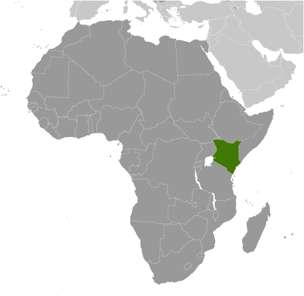
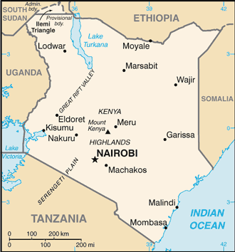
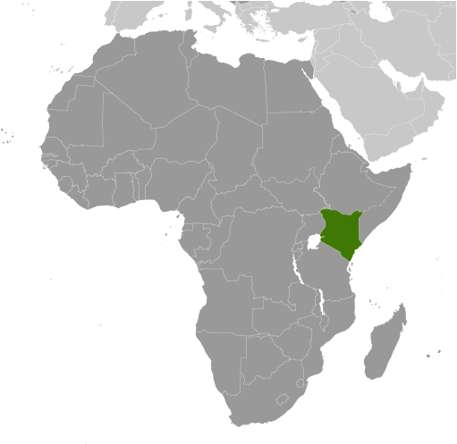
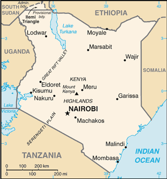

Africa :: KENYA
Introduction :: KENYA
-
Founding president and liberation struggle icon Jomo KENYATTA led Kenya from independence in 1963 until his death in 1978, when Vice President Daniel MOI took power in a constitutional succession. The country was a de facto one-party state from 1969 until 1982 when the ruling Kenya African National Union (KANU) made itself the sole legal party in Kenya. MOI acceded to internal and external pressure for political liberalization in late 1991. The ethnically fractured opposition failed to dislodge KANU from power in elections in 1992 and 1997, which were marred by violence and fraud, but were viewed as having generally reflected the will of the Kenyan people. President MOI stepped down in December 2002 following fair and peaceful elections. Mwai KIBAKI, running as the candidate of the multiethnic, united opposition group, the National Rainbow Coalition (NARC), defeated KANU candidate Uhuru KENYATTA, the son of founding president Jomo KENYATTA, and assumed the presidency following a campaign centered on an anticorruption platform.KIBAKI's reelection in December 2007 brought charges of vote rigging from Orange Democratic Movement (ODM) candidate Raila ODINGA and unleashed two months of violence in which as many as 1,500 people died. African Union-sponsored mediation led by former UN Secretary General Kofi ANNAN in late February 2008 resulted in a power-sharing accord bringing ODINGA into the government in the restored position of prime minister. The power sharing accord included a broad reform agenda, the centerpiece of which was constitutional reform. In August 2010, Kenyans overwhelmingly adopted a new constitution in a national referendum. The new constitution introduced additional checks and balances to executive power and significant devolution of power and resources to 47 newly created counties. It also eliminated the position of prime minister following the first presidential election under the new constitution, which occurred in March 2013. Uhuru KENYATTA won the election and was sworn into office in April 2013.
Geography :: KENYA
-
Eastern Africa, bordering the Indian Ocean, between Somalia and Tanzania1 00 N, 38 00 EAfricatotal: 580,367 sq kmland: 569,140 sq kmwater: 11,227 sq kmcountry comparison to the world: 50five times the size of Ohio; slightly more than twice the size of Nevadatotal: 3,457 kmborder countries (5): Ethiopia 867 km, Somalia 684 km, South Sudan 317 km, Tanzania 775 km, Uganda 814 km536 kmterritorial sea: 12 nmexclusive economic zone: 200 nmcontinental shelf: 200-m depth or to the depth of exploitationvaries from tropical along coast to arid in interiorlow plains rise to central highlands bisected by Great Rift Valley; fertile plateau in westmean elevation: 762 melevation extremes: lowest point: Indian Ocean 0 mhighest point: Mount Kenya 5,199 mlimestone, soda ash, salt, gemstones, fluorspar, zinc, diatomite, gypsum, wildlife, hydropoweragricultural land: 48.1%arable land 9.8%; permanent crops 0.9%; permanent pasture 37.4%forest: 6.1%other: 45.8% (2011 est.)1,030 sq km (2012)population heavily concentrated in the west along the shore of Lake Victoria; other areas of high density include the capital of Nairobi, and in the southeast along the Indian Ocean coastrecurring drought; flooding during rainy seasonsvolcanism: limited volcanic activity; the Barrier (1,032 m) last erupted in 1921; South Island is the only other historically active volcanowater pollution from urban and industrial wastes; degradation of water quality from increased use of pesticides and fertilizers; water hyacinth infestation in Lake Victoria; deforestation; soil erosion; desertification; poachingparty to: Biodiversity, Climate Change, Climate Change-Kyoto Protocol, Desertification, Endangered Species, Hazardous Wastes, Law of the Sea, Marine Dumping, Marine Life Conservation, Ozone Layer Protection, Ship Pollution, Wetlands, Whalingsigned, but not ratified: none of the selected agreementsthe Kenyan Highlands comprise one of the most successful agricultural production regions in Africa; glaciers are found on Mount Kenya, Africa's second highest peak; unique physiography supports abundant and varied wildlife of scientific and economic value
People and Society :: KENYA
-
47,615,739note: estimates for this country explicitly take into account the effects of excess mortality due to AIDS; this can result in lower life expectancy, higher infant mortality, higher death rates, lower population growth rates, and changes in the distribution of population by age and sex than would otherwise be expected (July 2017 est.)country comparison to the world: 30noun: Kenyan(s)adjective: KenyanKikuyu 22%, Luhya 14%, Luo 13%, Kalenjin 12%, Kamba 11%, Kisii 6%, Meru 6%, other African 15%, non-African (Asian, European, and Arab) 1%English (official), Kiswahili (official), numerous indigenous languagesChristian 83% (Protestant 47.7%, Catholic 23.4%, other Christian 11.9%), Muslim 11.2%, Traditionalists 1.7%, other 1.6%, none 2.4%, unspecified 0.2% (2009 est.)Kenya has experienced dramatic population growth since the mid-20th century as a result of its high birth rate and its declining mortality rate. More than 40% of Kenyans are under the age of 15 because of sustained high fertility, early marriage and childbearing, and an unmet need for family planning. Kenya’s persistent rapid population growth strains the labor market, social services, arable land, and natural resources. Although Kenya in 1967 was the first sub-Saharan country to launch a nationwide family planning program, progress in reducing the birth rate has largely stalled since the late 1990s, when the government decreased its support for family planning to focus on the HIV epidemic. Government commitment and international technical support spurred Kenyan contraceptive use, decreasing the fertility rate (children per woman) from about 8 in the late 1970s to less than 5 children twenty years later, but it has plateaued at just over 3 children today.Kenya is a source of emigrants and a host country for refugees. In the 1960s and 1970s, Kenyans pursued higher education in the UK because of colonial ties, but as British immigration rules tightened, the US, the then Soviet Union, and Canada became attractive study destinations. Kenya’s stagnant economy and political problems during the 1980s and 1990s led to an outpouring of Kenyan students and professionals seeking permanent opportunities in the West and southern Africa. Nevertheless, Kenya’s relative stability since its independence in 1963 has attracted hundreds of thousands of refugees escaping violent conflicts in neighboring countries; Kenya shelters more than 300,000 Somali refugees as of April 2017.0-14 years: 40.02% (male 9,557,274/female 9,497,870)15-24 years: 19.15% (male 4,552,448/female 4,567,894)25-54 years: 33.91% (male 8,170,264/female 7,976,751)55-64 years: 3.92% (male 856,092/female 1,009,075)65 years and over: 3% (male 614,751/female 813,320) (2017 est.)total dependency ratio: 78.3youth dependency ratio: 73.7elderly dependency ratio: 4.6potential support ratio: 21.7 (2015 est.)total: 19.7 yearsmale: 19.6 yearsfemale: 19.9 years (2017 est.)country comparison to the world: 1991.69% (2017 est.)country comparison to the world: 6123.9 births/1,000 population (2017 est.)country comparison to the world: 596.7 deaths/1,000 population (2017 est.)country comparison to the world: 140-0.2 migrant(s)/1,000 population (2017 est.)country comparison to the world: 109population heavily concentrated in the west along the shore of Lake Victoria; other areas of high density include the capital of Nairobi, and in the southeast along the Indian Ocean coasturban population: 26.5% of total population (2017)rate of urbanization: 4.15% annual rate of change (2015-20 est.)NAIROBI (capital) 3.915 million; Mombassa 1.104 million (2015)at birth: 1.02 male(s)/female0-14 years: 1.01 male(s)/female15-24 years: 1 male(s)/female25-54 years: 1.02 male(s)/female55-64 years: 0.84 male(s)/female65 years and over: 0.77 male(s)/femaletotal population: 1 male(s)/female (2016 est.)20.3 yearsnote: median age at first birth among women 25-29 (2014 est.)510 deaths/100,000 live births (2015 est.)country comparison to the world: 19total: 37.1 deaths/1,000 live birthsmale: 41.5 deaths/1,000 live birthsfemale: 32.7 deaths/1,000 live births (2017 est.)country comparison to the world: 49total population: 64.3 yearsmale: 62.8 yearsfemale: 65.8 years (2017 est.)country comparison to the world: 1862.98 children born/woman (2017 est.)country comparison to the world: 5666.3% (2015)5.7% of GDP (2014)country comparison to the world: 1140.2 physicians/1,000 population (2013)1.4 beds/1,000 population (2010)improved:urban: 81.6% of populationrural: 56.8% of populationtotal: 63.2% of populationunimproved:urban: 18.4% of populationrural: 43.2% of populationtotal: 36.8% of population (2015 est.)improved:urban: 31.2% of populationrural: 29.7% of populationtotal: 30.1% of populationunimproved:urban: 68.8% of populationrural: 70.3% of populationtotal: 69.9% of population (2015 est.)5.4% (2016 est.)country comparison to the world: 121.6 million (2016 est.)country comparison to the world: 536,000 (2016 est.)country comparison to the world: 6degree of risk: very highfood or waterborne diseases: bacterial and protozoal diarrhea, hepatitis A, and typhoid fevervectorborne disease: malaria, dengue fever, and Rift Valley feverwater contact disease: schistosomiasisanimal contact disease: rabies (2016)7.1% (2016)country comparison to the world: 16111% (2014)country comparison to the world: 425.3% of GDP (2015)country comparison to the world: 28definition: age 15 and over can read and writetotal population: 78%male: 81.1%female: 74.9% (2015 est.)total: 11 yearsmale: 11 yearsfemale: 11 years (2009)
Government :: KENYA
-
conventional long form: Republic of Kenyaconventional short form: Kenyalocal long form: Republic of Kenya/Jamhuri ya Kenyalocal short form: Kenyaformer: British East Africaetymology: named for Mount Kenya; the meaning of the name is unclear but may derive from the Kikuyu, Embu, and Kamba words "kirinyaga," "kirenyaa," and "kiinyaa" - all of which mean "God's resting place"presidential republicname: Nairobigeographic coordinates: 1 17 S, 36 49 Etime difference: UTC+3 (8 hours ahead of Washington, DC, during Standard Time)47 counties; Baringo, Bomet, Bungoma, Busia, Elgeyo/Marakwet, Embu, Garissa, Homa Bay, Isiolo, Kajiado, Kakamega, Kericho, Kiambu, Kilifi, Kirinyaga, Kisii, Kisumu, Kitui, Kwale, Laikipia, Lamu, Machakos, Makueni, Mandera, Marsabit, Meru, Migori, Mombasa, Murang'a, Nairobi City, Nakuru, Nandi, Narok, Nyamira, Nyandarua, Nyeri, Samburu, Siaya, Taita/Taveta, Tana River, Tharaka-Nithi, Trans Nzoia, Turkana, Uasin Gishu, Vihiga, Wajir, West Pokot12 December 1963 (from the UK)Jamhuri Day (Independence Day), 12 December (1963); note - Madaraka Day, 1 June (1963) marks the day Kenya attained internal self-rulehistory: previous 1963, 1969; latest drafted 6 May 2010, passed by referendum 4 August 2010, promulgated 27 August 2010amendments: proposed by either house of Parliament or by petition of at least one million eligible voters; passage of amendments by Parliament requires approval by at least two-thirds majority vote of both houses in each of two readings, approval in a referendum by majority of votes cast by at least 20% participation of eligible voters in at least one-half of Kenya’s counties, and approval by the president; passage of amendments introduced by petition requires approval by a majority of county assemblies, approval by majority vote of both houses, and approval by the president (2017)mixed legal system of English common law, Islamic law, and customary law; judicial review in a new Supreme Court established pursuant to the new constitutionaccepts compulsory ICJ jurisdiction with reservations; accepts ICCt jurisdictioncitizenship by birth: nocitizenship by descent only: at least one parent must be a citizen of Kenyadual citizenship recognized: yesresidency requirement for naturalization: 4 out of the previous 7 years18 years of age; universalchief of state: President Uhuru KENYATTA (since 9 April 2013); Deputy President William RUTO (since 9 April 2013); note - the president is both chief of state and head of governmenthead of government: President Uhuru KENYATTA (since 9 April 2013); Deputy President William RUTO (since 9 April 2013); note - position of the prime minister abolished after the March 2013 electionscabinet: Cabinet appointed by the president, subject to confirmation by the National Assemblyelections/appointments: president and deputy president directly elected on the same ballot by qualified majority popular vote for a 5-year term (eligible for a second term); in addition to receiving an absolute majority popular vote, the presidential candidate must also win at least 25% of the votes cast in at least 24 of the 47 counties to avoid a runoff; election last held on 26 October 2017 (next to be held in 2022)election results: Uhuru KENYATTA reelected president in second round; percent of vote - Uhuru KENYATTA (Jubilee Party) 98.3%, Raila ODINGA (ODM) 1%, other 0.7%; note - challenge filed in courtdescription: bicameral parliament consists of the Senate (67 seats; 47 members directly elected in single-seat constituencies by simple majority vote and 20 directly elected by proportional representation vote - 16 women, 2 representing youth, and 2 representing the disabled; members serve 5-year terms) and the National Assembly (349 seats; 290 members directly elected in single-seat constituencies by simple majority vote, 47 women in single-seat constituencies elected by simple majority vote, and 12 members nominated by the National Assembly - 6 representing youth and 6 representing the disabled; members serve 5-year terms)elections: last held on 8 August 2017 (next to be held in August 2021)election results: Senate - percent of vote by party/coalition - NA; seats by party/coalition - Jubilee Party 34; CORD Coalition 28 (ODM 17, ANC 3, KANU 3, WDM-K 3, other 2); independent 1; other 1National Assembly - percent of vote by party/coalition - NA; seats by party/coalition - Jubilee Party 171; CORD Coalition 139 (ODM 76, WDM-K 23, ANC 14, FORD-K 12, KANU 10, other 4); EFP 5; MCC 4; PDR 4; independent 14; other 11; one vacancyhighest court(s): Supreme Court (consists of chief and deputy chief justices and 5 judges)judge selection and term of office: chief and deputy chief justices nominated by Judicial Service Commission (JSC) and appointed by president with approval of the National Assembly; other judges nominated by the JSC and appointed by president; chief justice serves a nonrenewable 10-year term or till age 70 whichever comes first; other judges serve till age 70subordinate courts: High Court; Court of Appeal; military courts; magistrates' courts; religious courtsAlliance Party of Kenya or APK [Kiraitu MURUNGI]Amani National Congress [Musalia MUDAVADI]Coalition for Reforms and Democracy or CORD (includes ODM, WDM-K, FORD-K) [Raila ODINGA]Federal Party of Kenya or FPK [Cyrus JIRONGA]Forum for the Restoration of Democracy-Kenya or FORD-K [Moses WETANGULA]Forum for the Restoration of Democracy-People or FORD-P [Henry OBWOCHA]Jubilee Party [Uhuru KENYATTA]Kenya African National Union or KANU [Gideon MOI]National Rainbow Coalition or NARC [Charity NGILU]Orange Democratic Movement Party of Kenya or ODM [Raila ODINGA]United Democratic Forum [Musalia MUDAVADI]Wiper Democratic Movement-K or WDM-K (formerly Orange Democratic Movement-Kenya or ODM-K) [Kalonzo MUSYOKA]African Center for Open Governance or AfriCOG [Gladwell OTIENO]Anglican Church of Kenya [Archbishop Jackson Nasoore Ole SAPIT]Council of Imams and Preachers of Kenya or CIPK [Sheikh Mohammed KHALIFA]Federation of Women Lawyers in KenyaKenya Association of ManufacturersKenya Human Rights Commission or KHRC [George KEGORO]Kenya Private Sector AllianceKenyans for Peace with Truth and Justice (umbrella group of more than 30 NGOs)Muslim Human Rights Forum [Ali-Amin KIMATHI]National Muslim Leaders Forum or NAMLEF [Abdullahi ABDI]Protestant National Council of Churches of Kenya or NCCK [Canon Peter Karanja MWANGI]Roman Catholic Church [Cardinal John NJUE]Supreme Council of Kenya Muslims or SUPKEM [Adan WACHU]other: labor unions, other Christian churchesACP, AfDB, AU, C, CD, COMESA, EAC, EADB, FAO, G-15, G-77, IAEA, IBRD, ICAO, ICCt, ICRM, IDA, IFAD, IFC, IFRCS, IGAD, ILO, IMF, IMO, IMSO, Interpol, IOC, IOM, IPU, ISO, ITSO, ITU, ITUC (NGOs), MIGA, MINUSMA, MONUSCO, NAM, OPCW, PCA, UN, UNAMID, UNCTAD, UNESCO, UNHCR, UNIDO, UNIFIL, UNMIL, UNMISS, UNWTO, UPU, WCO, WHO, WMO, WTOchief of mission: Ambassador Robinson Njeru GITHAE (since 18 November 2014)chancery: 2249 R Street NW, Washington, DC 20008telephone: [1] (202) 387-6101FAX: [1] (202) 462-3829consulate(s) general: Los Angelesconsulate(s): New Yorkchief of mission: Ambassador Robert F. GODEC (since 16 January 2013)embassy: United Nations Avenue, Nairobi; P.O. Box 606 Village Market, Nairobi 00621mailing address: American Embassy Nairobi, U.S. Department of State, Washington, DC 20521-8900telephone: [254] (20) 363-6000FAX: [254] (20) 363-6157three equal horizontal bands of black (top), red, and green; the red band is edged in white; a large Maasai warrior's shield covering crossed spears is superimposed at the center; black symbolizes the majority population, red the blood shed in the struggle for freedom, green stands for natural wealth, and white for peace; the shield and crossed spears symbolize the defense of freedomlion; national colors: black, red, green, whitename: "Ee Mungu Nguvu Yetu" (Oh God of All Creation)lyrics/music: Graham HYSLOP, Thomas KALUME, Peter KIBUKOSYA, Washington OMONDI, and George W. SENOGA-ZAKE/traditional, adapted by Graham HYSLOP, Thomas KALUME, Peter KIBUKOSYA, Washington OMONDI, and George W. SENOGA-ZAKEnote: adopted 1963; based on a traditional Kenyan folk song
Economy :: KENYA
-
Kenya is the economic, financial, and transport hub of East Africa. Kenya’s real GDP growth has averaged over 5% for the last eight years. Since 2014, Kenya has been ranked as a lower middle income country because its per capita GDP crossed a World Bank threshold. While Kenya has a growing entrepreneurial middle class and steady growth, its economic and development trajectory could be impaired by weak governance and corruption. Although reliable numbers are hard to find, unemployment and under-employment are extremely high, and could be near 40% of the population.Agriculture remains the backbone of the Kenyan economy, contributing one-third of GDP. About 75% of Kenya’s population of roughly 44.2 million work at least part-time in the agricultural sector, including livestock and pastoral activities. Over 75% of agricultural output is from small-scale, rain-fed farming or livestock production.Inadequate infrastructure continues to hamper Kenya’s efforts to improve its annual growth to the 8%-10% range so that it can meaningfully address poverty and unemployment. The KENYATTA administration has been successful in courting external investment for infrastructure development. International financial institutions and donors remain important to Kenya's economic growth and development, but Kenya has also successfully raised capital in the global bond market. Kenya issued its first sovereign bond offering in mid-2014. Nairobi has contracted with a Chinese company to construct a new standard gauge railway connecting Mombasa and Nairobi, with completion expected in June 2017. In 2013, the country adopted a devolved system of government with the creation of 47 counties, and is in the process of devolving state revenues and responsibilities to the counties. Inflationary pressures and sharp currency depreciation peaked in early 2012 but have since abated following low global food and fuel prices and monetary interventions by the Central Bank. Drought-like conditions in parts of the country have pushed March 2017 inflation above 9%. Chronic budget deficits, including a shortage of funds in mid-2015, hampered the government’s ability to implement proposed development programs, but the economy is back in balance with many indicators, including foreign exchange reserves, interest rates, and FDI moving in the right direction. Underlying weaknesses were exposed in the banking sector in 2016 when the government was forced to take over three small and undercapitalized banks. In 2016, the government enacted legislation that limits interest rates banks can charge on loans and set a rate that banks must pay their depositors. This measure led to a sharp shrinkage of credit in the economy.Tourism holds a significant place in Kenya’s economy. A spate of terrorist attacks by the Somalia-based group al-Shabaab reduced international tourism earning after their deadly 2013 attack on Nairobi’s Westgate mall, which killed 67 people, but the sector is now recovering. In 2016, tourist arrivals grew by 17% while revenues from tourism increased by 37%.$152.9 billion (2016 est.)$142.6 billion (2015 est.)$133.5 billion (2014 est.)note: data are in 2016 dollarscountry comparison to the world: 75$70.53 billion (2016 est.)5.8% (2016 est.)5.7% (2015 est.)5.4% (2014 est.)country comparison to the world: 26$3,400 (2016 est.)$3,300 (2015 est.)$3,200 (2014 est.)note: data are in 2016 dollarscountry comparison to the world: 18715.5% of GDP (2016 est.)10.9% of GDP (2015 est.)12.1% of GDP (2014 est.)country comparison to the world: 146household consumption: 79.1%government consumption: 13.6%investment in fixed capital: 17.3%investment in inventories: -1.2%exports of goods and services: 14.6%imports of goods and services: -23.4% (2016 est.)agriculture: 35.6%industry: 17.2%services: 47.3% (2016 est.)tea, coffee, corn, wheat, sugarcane, fruit, vegetables; dairy products, beef, fish, pork, poultry, eggssmall-scale consumer goods (plastic, furniture, batteries, textiles, clothing, soap, cigarettes, flour), agricultural products, horticulture, oil refining; aluminum, steel, lead; cement, commercial ship repair, tourism6.5% (2016 est.)country comparison to the world: 3019.14 million (2016 est.)country comparison to the world: 33agriculture: 61.1%industry: 6.7%services: 32.2% (2005 est.)40% (2013 est.)40% (2001 est.)country comparison to the world: 21043.4% (2012 est.)lowest 10%: 1.8%highest 10%: 37.8% (2005)42.5 (2008 est.)44.9 (1997)country comparison to the world: 49revenues: $13.06 billionexpenditures: $17.94 billion (2016 est.)18.9% of GDP (2016 est.)country comparison to the world: 162-7.1% of GDP (2016 est.)country comparison to the world: 18553.5% of GDP (2016 est.)50.4% of GDP (2015 est.)country comparison to the world: 911 July - 30 June6.3% (2016 est.)6.6% (2015 est.)country comparison to the world: 18011.5% (20 January 2016)7% (31 December 2010)country comparison to the world: 1616.58% (31 December 2016 est.)16.16% (31 December 2015 est.)country comparison to the world: 28$12.77 billion (31 December 2016 est.)$9.927 billion (31 December 2015 est.)country comparison to the world: 76$22.86 billion (31 December 2016 est.)$21.77 billion (31 December 2015 est.)country comparison to the world: 84$29.88 billion (31 December 2016 est.)$27.77 billion (31 December 2015 est.)country comparison to the world: 78$26.16 billion (31 December 2014 est.)$22.09 billion (31 December 2013 est.)$14.79 billion (31 December 2012 est.)country comparison to the world: 61$-3.653 billion (2016 est.)$-4.308 billion (2015 est.)country comparison to the world: 165$5.747 billion (2016 est.)$5.982 billion (2015 est.)country comparison to the world: 102tea, horticultural products, coffee, petroleum products, fish, cementUganda 10.1%, Tanzania 8.6%, US 7.7%, Netherlands 7.4%, UK 7.3%, UAE 4.6%, Pakistan 4.5% (2016)$13.64 billion (2016 est.)$14.36 billion (2015 est.)country comparison to the world: 85machinery and transportation equipment, petroleum products, motor vehicles, iron and steel, resins and plasticsChina 24.1%, India 11.2%, UAE 7.7%, Japan 5.4% (2016)$7.601 billion (31 December 2016 est.)$7.548 billion (31 December 2015 est.)country comparison to the world: 79$22.6 billion (31 December 2016 est.)$19.15 billion (31 December 2015 est.)country comparison to the world: 88$5.317 billion (31 December 2016 est.)$4.562 billion (31 December 2015 est.)country comparison to the world: 102$NA (31 December 2016 est.)$NA (31 December 2015 est.)Kenyan shillings (KES) per US dollar -101.504 (2016 est.)101.504 (2015 est.)98.179 (2014 est.)87.921 (2013 est.)84.53 (2012 est.)
Energy :: KENYA
-
population without electricity: 35,400,000electrification - total population: 20%electrification - urban areas: 60%electrification - rural areas: 7% (2013)9.548 billion kWh (2015 est.)country comparison to the world: 1047.666 billion kWh (2015 est.)country comparison to the world: 10545 million kWh (2015 est.)country comparison to the world: 8967 million kWh (2015 est.)country comparison to the world: 1022.301 million kW (2015 est.)country comparison to the world: 10931.9% of total installed capacity (2015 est.)country comparison to the world: 1830% of total installed capacity (2015 est.)country comparison to the world: 11835.6% of total installed capacity (2015 est.)country comparison to the world: 5853.6% of total installed capacity (2015 est.)country comparison to the world: 10 bbl/day (2016 est.)country comparison to the world: 1520 bbl/day (2014 est.)country comparison to the world: 14511,870 bbl/day (2014 est.)country comparison to the world: 720 bbl (1 January 2017 es)country comparison to the world: 15114,320 bbl/day (2014 est.)country comparison to the world: 9793,000 bbl/day (2015 est.)country comparison to the world: 83345.2 bbl/day (2014 est.)country comparison to the world: 11476,090 bbl/day (2014 est.)country comparison to the world: 660 cu m (2013 est.)country comparison to the world: 1520 cu m (2013 est.)country comparison to the world: 1960 cu m (2013 est.)country comparison to the world: 1280 cu m (2013 est.)country comparison to the world: 1430 cu m (1 January 2014 es)country comparison to the world: 15513 million Mt (2013 est.)country comparison to the world: 97
Communications :: KENYA
-
total subscriptions: 72,801subscriptions per 100 inhabitants: less than 1 (July 2016 est.)country comparison to the world: 129total: 38,982,188subscriptions per 100 inhabitants: 83 (July 2016 est.)country comparison to the world: 35general assessment: the mobile-cellular system is generally good, especially is urban areas; fixed-line telephone system is small and inefficient; trunks are primarily microwave radio relay; business data commonly transferred by a very small aperture terminal (VSAT) systemdomestic: sole fixed-line provider, Telkom Kenya, privatized in 2013 and is now 60% owned by Helios Investment Partners, a London-based equity fund, and 40% owned by the Kenyan Government; multiple providers in the mobile-cellular segment of the market fostering a boom in mobile-cellular telephone usage with teledensity reaching 83 per 100 persons in 2016international: country code - 254; landing point for the EASSy, TEAMS and SEACOM fiber-optic submarine cable systems; satellite earth stations - 4 Intelsat (2016)about a half-dozen large-scale privately owned media companies with TV and radio stations, as well as a state-owned TV broadcaster, provide service nationwide; satellite and cable TV subscription services available; state-owned radio broadcaster operates 2 national radio channels and provides regional and local radio services in multiple languages; many private radio stations broadcast on a national level along with over 100 private and non-profit provincial stations broadcasting in local languages; transmissions of several international broadcasters available (2014).ketotal: 12,165,597percent of population: 26.0% (July 2016 est.)country comparison to the world: 33
Transportation :: KENYA
-
number of registered air carriers: 16inventory of registered aircraft operated by air carriers: 106annual passenger traffic on registered air carriers: 4,874,590annual freight traffic on registered air carriers: 286,414,683 mt-km (2015)5Y (2016)197 (2013)country comparison to the world: 28total: 16over 3,047 m: 52,438 to 3,047 m: 21,524 to 2,437 m: 2914 to 1,523 m: 6under 914 m: 1 (2017)total: 1811,524 to 2,437 m: 14914 to 1,523 m: 107under 914 m: 60 (2013)oil 4 km; refined products 928 km (2013)total: 3,806 kmnarrow gauge: 3,334 km 1.000-m gaugestandard gauge: 472 km 1.435-m gauge (2014)country comparison to the world: 54total: 161,452 kmpaved: 14,420 km (8,500 km highways, 1,872 urban roads, and 4,048 rural roads)unpaved: 147,032 km (2017)country comparison to the world: 32none specifically; the only significant inland waterway is the part of Lake Victoria within the boundaries of Kenya; Kisumu is the main port and has ferry connections to Uganda and Tanzania (2011)registered in other countries: 5 (Comoros 2, Saint Vincent and the Grenadines 2, unknown 1) (2010)country comparison to the world: 126major seaport(s): Kisumu, MombasaLNG terminal(s) (import): Mombasa
Military and Security :: KENYA
-
1.32% of GDP (2016)1.32% of GDP (2015)1.33% of GDP (2014)1.56% of GDP (2013)1.67% of GDP (2012)country comparison to the world: 41Kenya Defence Forces: Kenya Army, Kenya Navy, Kenya Air Force (2012)18-26 years of age for male and female voluntary service (under 18 with parental consent), with a 9-year obligation (7 years for Kenyan Navy); applicants must be Kenyan citizens and provide a national identity card (obtained at age 18) and a school-leaving certificate; women serve under the same terms and conditions as men; mandatory retirement at age 55 (2012)
Transnational Issues :: KENYA
-
Kenya served as an important mediator in brokering Sudan's north-south separation in February 2005; Kenya provides shelter to an estimated 580,000 refugees, including Ugandans who flee across the border periodically to seek protection from Lord's Resistance Army rebels; Kenya works hard to prevent the clan and militia fighting in Somalia from spreading across the border, which has long been open to nomadic pastoralists; the boundary that separates Kenya's and Sudan's sovereignty is unclear in the "Ilemi Triangle," which Kenya has administered since colonial timesrefugees (country of origin): 313,255 (Somalia); 108,201 (South Sudan) (refugees and asylum seekers); 34,451 (Democratic Republic of the Congo) (refugees and asylum seekers); 27,640 (Ethiopia) (refugees and asylum seekers); 9,881 (Sudan) (refugees and asylum seekers); 7,181 (Burundi) (2017)IDPs: 138,000 (represents people displaced since the 1990s by ethnic and political violence and land disputes and who sought refuge mostly in camps; persons who took refuge in host communities or were evicted in urban areas are not included in the data; data is not available on pastoralists displaced by cattle rustling, violence, natural disasters, and development projects; the largest displacement resulted from 2007-08 post-election violence (2016)stateless persons: 20,000 (2016); note - the stateless population consists of Nubians, Kenyan Somalis, and coastal Arabs; the Nubians are descendants of Sudanese soldiers recruited by the British to fight for them in East Africa more than a century ago; Nubians did not receive Kenyan citizenship when the country became independent in 1963; only recently have Nubians become a formally recognized tribe and had less trouble obtaining national IDs; Galjeel and other Somalis who have lived in Kenya for decades are included with more recent Somali refugees and denied ID cardswidespread harvesting of small plots of marijuana; transit country for South Asian heroin destined for Europe and North America; Indian methaqualone also transits on way to South Africa; significant potential for money-laundering activity given the country's status as a regional financial center; massive corruption, and relatively high levels of narcotics-associated activities